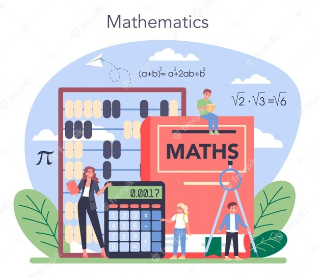
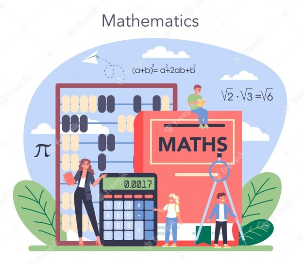

Bienvenidos a Mate Express
Bienvenidos a Mate Express
Puedes aprender con solo analizar, recuerda que el aprendizaje esta en ti
Bienvenidos a Mate Express Puedes aprender con solo analizar, recuerda que el aprendizaje esta en ti
En la vida diaria: Donde se realizan cálculos matemáticos con gran asiduidad, o mediciones y comparaciones, la matemática en nuestras vidas que muchos expertos consideran la ausencia de nociones matemáticas como una variante del analfabetismo.

Isócrates era muy ambicioso a la hora de creer que las matemáticas
y la filosofía iban bien de la mano. A primera vista, las mates
son una materia totalmente distinta: al igual que la lengua española
o la literatura, son disciplinas para las que hay que tener afinidad
(y si no se tiene, tampoco pasa nada).
 

| Cuerpos redondos | Elementos | Clasificacion |
|---|---|---|
| Poliedros | Caras | planas |
| Cuerpos redondos | Altura | redondas |